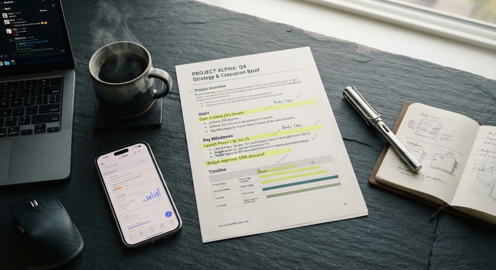

Fundamento
¿Qué es un briefing y de dónde viene el término?
El briefing es un documento escrito que recopila, ordena y comunica toda la información necesaria para que un equipo pueda ejecutar un proyecto de comunicación, diseño o marketing. Funciona como el punto de partida formal entre quien encarga y quien ejecuta.
El término proviene del verbo inglés to brief, que significa "informar de manera concisa y completa antes de una acción". En el ámbito militar, un briefing era la sesión previa a una misión donde se entregaban los datos esenciales: objetivo, terreno, recursos y amenazas. La publicidad adoptó esa lógica en los años 50 y la consolidó como práctica estándar.
En términos académicos, el briefing es un instrumento de gestión de la información que reduce la ambigüedad, alinea expectativas y establece criterios verificables de éxito.

Clasificación
Tipos de briefing según su función y su emisor
No existe un único modelo de briefing. Su estructura y profundidad dependen de quién lo emite y con qué propósito. La clasificación académica más difundida distingue:
📋 Briefing de cliente (o briefing de cuenta)
Lo redacta el cliente o la cuenta que lo representa. Describe el problema de negocio, el público objetivo, los objetivos y el presupuesto. Es el insumo original.
🎨 Briefing creativo
Lo elabora el equipo de planificación o cuentas para el equipo creativo. Traduce el problema de negocio en un desafío comunicacional concreto y sugiere territorios posibles.
⚙️ Briefing técnico o de producción
Detalla especificaciones de formato, plazos, entregables y recursos. Lo usan equipos de producción, desarrollo o medios.
También se distingue entre briefing interno (entre áreas de una misma organización) y briefing externo (entre cliente y proveedor). Ambos comparten la misma lógica: informar antes de ejecutar.
Estructura
Componentes esenciales de un briefing bien construido
Aunque cada organización adapta su plantilla, la literatura especializada coincide en un conjunto mínimo de apartados. La siguiente tabla los resume con su función y una pregunta guía que ayuda a redactarlos.
| Componente | Función | Pregunta guía |
|---|---|---|
| Contexto | Situar el proyecto en su realidad de mercado. | ¿Qué está pasando en el sector y en la marca? |
| Objetivo | Definir el resultado esperado, medible. | ¿Qué queremos lograr y cómo lo mediremos? |
| Público objetivo | Caracterizar al destinatario del mensaje. | ¿A quién le hablamos y qué lo mueve? |
| Mensaje clave | Sintetizar la idea central a comunicar. | ¿Qué debe quedar en la cabeza del público? |
| Tono y estilo | Orientar la expresión verbal y visual. | ¿Cómo queremos sonar y vernos? |
| Entregables | Listar los productos concretos esperados. | ¿Qué se entrega, en qué formato y cuándo? |
| Presupuesto y plazos | Acotar recursos y tiempos. | ¿Con cuánto contamos y para cuándo? |
| Indicadores de éxito | Establecer criterios objetivos de evaluación. | ¿Cómo sabremos si funcionó? |
Nota metodológica: la ausencia de cualquiera de estos componentes incrementa la probabilidad de interpretaciones divergentes entre las partes.
Aplicación
Ejemplos prácticos: del papel a la realidad
Para comprender el briefing conviene verlo funcionando en contextos distintos. Los siguientes ejemplos condensan briefings reales simplificados.
Ejemplo A — Gestión de la cuenta de Instagram de una marca de ropa sustentable
Contexto: la marca vende ropa hecha con materiales reciclados, tiene buena
reputación offline pero su cuenta de Instagram está estancada en 4.200 seguidores y publica
sin una línea editorial clara.
Objetivo: duplicar la comunidad a 8.500 seguidores y aumentar la tasa de
interacción del 1,8% al 4% en cuatro meses.
Público: mujeres y hombres de 20 a 35 años interesados en moda sostenible,
consumo consciente y lifestyle ecológico; consumen contenido de creadores como @thegreenhub
y siguen hashtags como #slowfashion.
Mensaje: "Vestir bien no tiene por qué costarle al planeta".
Entregables: calendario editorial mensual, 12 publicaciones (feed y Reels)
por mes, 3 stories diarias, guion de 2 colaboraciones con microinfluencers y reporte mensual
de métricas (alcance, engagement, guardados y compartidos).
Ejemplo B — Rediseño de identidad visual de una cafetería
Contexto: la marca creció, abrió tres sucursales y su imagen ya no refleja
la experiencia actual.
Objetivo: unificar la identidad y mejorar el reconocimiento de marca en un
20% en seis meses.
Público: clientes habituales de 25 a 45 años y turistas.
Mensaje: "El mismo café de siempre, con una nueva forma de contarlo".
Entregables: manual de marca, packaging, señalética y plantillas para
redes.
Crítica
Errores frecuentes y cómo evitarlos
La práctica profesional ha identificado un conjunto recurrente de fallas en la redacción de briefings. Reconocerlas permite evitarlas.
- 1.Objetivos vagos: "queremos más visibilidad" no es un objetivo, es un deseo. Debe expresarse con verbo medible: "aumentar el alcance en un 25% en tres meses".
- 2.Público genérico: "hombres y mujeres de 18 a 65 años" no es un público, es casi toda la población. Un buen briefing describe hábitos, motivaciones y barreras.
- 3.Mezclar estrategia con táctica: el briefing define el qué y el porqué; la táctica (qué red social, qué formato) se decide después, idealmente con el equipo ejecutor.
- 4.Ausencia de indicadores: sin métricas de éxito, cualquier resultado será interpretable de forma conveniente por cada parte.
- 5.Briefings oralizados: lo que no está escrito no existe. Las reuniones se olvidan; el documento permanece.
📝 Ejercicio de aplicación
Elige un proyecto real o ficticio y redacta un briefing completo aplicando los ocho componentes de la tabla. Luego verifica con esta lista:
PASO 01
¿El objetivo es medible y tiene plazo? Si no, reescríbelo.
PASO 02
¿El público está descrito con hábitos y motivaciones, no solo con edad y género?
PASO 03
¿Los entregables son concretos y los indicadores de éxito están definidos?
Si las tres respuestas son afirmativas, tu briefing está listo para circular.